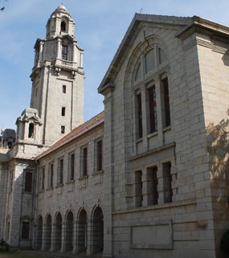

Welcome to the Sixth Joint Research Students Symposium of the Departments of CSA, ECE, EE, ESE, and SERC at the Indian Institute of Science!
EECS-2015 primarily is a forum for presentations by senior doctoral students (expecting to graduate in 2015) involving the Departments of Computer Science and Automation (CSA), Electrical Communication Engineering (ECE), Electrical Engineering (EE), Electronic Systems Engineering (ESE), and Supercomputer Education and research Centre (SERC). This year's edition will comprise 30 presentations by doctoral students organized into five sessions:
Highlights of EECS Symposium - 2015 include keynote talks, invited talks by inter-disciplinary centres in IISc, invited talks by faculty members of the five departments, poster presentations, and an Alumni Event. The symposium offers a splendid platform for exchange of state-of-the-art research ideas and for networking among students, faculty, industry researchers, and alumni.
Final year Ph.D. / M.Sc.(Engg.) students (i.e., students expecting to finish their Ph.D. / M.Sc.(Engg.) in the calendar year 2015) of departments CSA, ECE, EE, ESE, and SERC are eligible to present their research at a high-level, in about 20 minutes.
IMPORTANT NOTE: Students are requested to keep the audience (students and faculty from the Electrical Sciences Division) in mind and pitch their presentation at an appropriate level, and manage their time well so as to finish the presentation comfortably within the scheduled interval. A set of interesting guidelines on - How to give a technical talk to a broad technical audience is available here as pdf. (Courtesy: Chris Godsil)
To submit an abstract (no more than 250 words),use Easy Chair conference management system.
Deadline for submission of Abstracts: January 16th, 2015.
NOTES:
1. The decisions on oral and poster sessions will be sent out by January 23rd, 2015
2. Deadline for submission of slides: January 30th, 2015.
3. The reviews on the slides would be available by February 2nd, 2015.
4. Deadline for submission of final slides: February 6th, 2015.
There will be Faculty presentations from each participating department.
Industry talks and Alumni event are also included in the Symposium.
Date : 12 - 13 February, 2015
Venue : Faculty Hall, Indian Institute of Science.
===Links:===
:!:The Symposium Proceedings will be available after conclusion here. :!:
For Important Dates, see EECS 2015 Deadlines.
For the Symposium Program, see EECS 2015 Programs.
For the Organising Committee, see EECS 2015 Organising Committee.
:!:For the Poster, see EECS 2015 Poster.:!:
For Contact Information, see EECS 2015 Chairman.